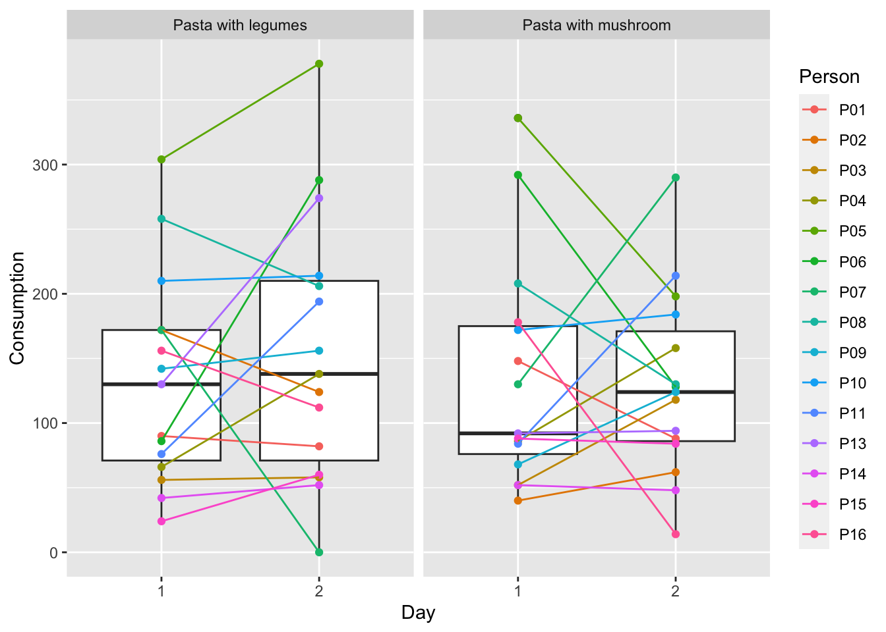
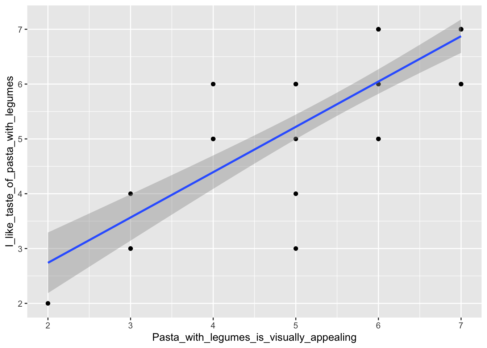

Chapter 12 Profiling segments
There are many ways of profiling consumer segments. Some of the most widely used are shown in this chapter, as well as in the chapter Logistic Regression.
The data in this chapter constitute data from the following study.
Reipurth, Malou FS, Lasse Hørby, Charlotte G. Gregersen, Astrid Bonke, and Federico JA Perez Cueto. “Barriers and facilitators towards adopting a more plant-based diet in a sample of Danish consumers.” Food quality and preference 73 (2019): 288-292. and can be found in the data4consumerscience-package as plantbaseddiet.
The same order of operation regarding clustering will be followed here as in Consumer segmentation.
library(data4consumerscience)
data(plantbaseddiet)
set.seed(123)
res <- kmeans(plantbaseddiet[,c('a_meat', 'a_dairy','a_eggs')],centers = 4)
res$centers## a_meat a_dairy a_eggs
## 1 18.812500 5.729167 4.492188
## 2 3.719886 5.167045 2.915909
## 3 4.688508 18.854839 3.601815
## 4 19.150000 21.850000 7.678571plantbaseddiet$clusters <- factor(res$cluster,
labels = c('High Meat','Low all','High Dairy','High All'))The dataset from the data4consumerscience package is loaded into the R environment. set.seed(123) sets a seed for generating random numbers, resulting in the k-means cluster analysis being reproducible, that is when running the k-means cluster analysis multiple times R will produce the same results.
The kmeans() function performs the k-means cluster analysis, using the variables a_meat, a_dairy and a_eggs as input, while “centers” specifies the number of centers to be created. res$centers retrieves the cluster centers and the values represent the average values of the variables for each cluster e.g. Cluster 1 has an average value of 18.81 for a_meat.
The last line adds a new variable “clusters” to the “plantbaseddiet” dataset. The “res$cluster” contains the cluster assignment for each observation (in this case participant). The factor is used to convert the cluster assignments into factor levels, corresponding to the labels “High Meat”, “Low all”, “High Dairy”, “High All”. Meaning cluster “1” will be assigned “High Meat”, in alignment with the result from earlier.
12.1 Table 1 as a profiling tool
Table 1 in this study is a descriptive representation of the clusters, and hence is indeed a profiling of the segments, as it shows a nice overview of the socio-demographic distribution between clusters.
Recall the tableone-package from Table 1. Below is code, that can lead you on the right track to mimic the table in the study. What variables are missing from the Table 1 of the study?
library(tableone)
tb1 <- CreateTableOne(data = plantbaseddiet,
strata = 'clusters',
vars = c('gender','age'))
print(tb1, cramVars = 'gender', nonnormal = 'age')## Stratified by clusters
## High Meat Low all
## n 48 220
## gender = Female/Male (%) 29/19 (60.4/39.6) 168/52 (76.4/23.6)
## age (median [IQR]) 29.00 [25.00, 35.25] 29.00 [25.00, 39.00]
## Stratified by clusters
## High Dairy High All p
## n 124 70
## gender = Female/Male (%) 99/25 (79.8/20.2) 44/26 (62.9/37.1) 0.008
## age (median [IQR]) 32.00 [26.00, 45.25] 31.50 [26.00, 40.75] 0.104
## Stratified by clusters
## test
## n
## gender = Female/Male (%)
## age (median [IQR]) nonnorm12.2 Visualization of Consumer Segments
We use Correspondence Analysis. In principle just a PCA model for count data.
You do not need to know all the details behind Correspondence Analysis. But it is a rather useful tool as a graphical supplement to the tabular characterization.
12.3 Creating the contingency table
library(tidyverse)
X <- plantbaseddiet %>%
mutate(agegrp = cut(age, breaks = quantile(age), include.lowest = T)) %>%
gather(demo,demoval, gender,agegrp,city:income) %>%
mutate(demoval = paste(demo,demoval,sep = '='))
conttb <- table(X$demoval,X$clusters)
conttb##
## High Meat Low all High Dairy High All
## agegrp=(26,30] 9 46 16 15
## agegrp=(30,40.8] 13 45 35 18
## agegrp=(40.8,76] 10 52 36 18
## agegrp=[15,26] 16 77 37 19
## children=1 35 165 81 40
## children=2 5 27 23 13
## children=3 6 25 17 13
## children=4 2 2 2 3
## children=5 0 1 1 1
## city=1 35 179 97 51
## city=2 13 41 27 19
## education=2 3 7 2 2
## education=3 14 52 28 25
## education=4 17 90 53 27
## education=5 14 71 41 16
## gender=Female 29 168 99 44
## gender=Male 19 52 25 26
## household=1 5 52 27 11
## household=2 28 110 53 29
## household=3 7 27 24 13
## household=4 7 26 16 13
## household=5 1 5 4 4
## income=1 3 25 11 7
## income=2 7 55 34 10
## income=3 12 63 27 9
## income=4 12 38 23 12
## income=5 14 39 29 32The package “tidyverse” is used to create a contingency table from the “plantbaseddiet” dataset. The first use of the “mutate” function is used to create a new variable “agegrp”. The “cut” function is used to create age groups by dividing the age into quantiles breaks. The “include.lowest” is set to “TRUE” to include the lowest value in the first age group. The “gather” function is then used to gather the variables “gender”, “agegrp” and variables from “city” to “income” into two new variables “demo” and “demoval”. This reshapes the data from a wide format to a long format, resulting in the variable “demo” containing the variable names and the variable “demoval” containing the corresponding values. The second use of the “mutate” function combines the values in “demo” and “demoval” seperated by a “=” into the variable “demoval”. Meaning if “demo” is gender and “demoval” is Male. The resulting “demoval” would be “gender=Male”
The contingency table is then created using the “Table” function. In this case “demoval” is used as rows, and “clusters” as columns.
If you consider the row for children=1, Based on the contingency table results provided above, you can see that out of the participants who have 1 child, 35 participants are assigned to the cluster “High Meat”, 165 participants are assigned to the cluster “Low All”, and so on. Similarly, for other categories such as children=2, children=3, etc.
12.4 Plot the numbers
Here is a simple visual representation of the numbers
library("gplots")
# 1. convert the data as a table
dt <- as.table(as.matrix(conttb))
# 2. Graph
balloonplot(t(dt), main ="Demographics of Meat/Dairy segments", xlab ="", ylab="",
label = F, show.margins = F)
To further visualize the results from the contingency table, one can use a balloonplot. First the results from the contingency table has to be converted into a table. The package “gplots” is used for creating the balloonplot. In the balloonplot, the dataframe dt is transposed to satisfy the needs of the balloonplot function. The arguments “label” and “show.margins” are set to “FALSE” to hide labels and margins for a cleaner plot.
The interpretation is straight forward. The bigger the circle, the higher the frequencies. e.g. as for the previous section participants with 1 child, the circle is smaller for the cluster “High Meat” corresponding to 35 in the contingency table compared to the cluster “Low All” with a much bigger circle corresponding to 165 in the contingency table.
12.5 Contingency table
There is another option for assessing differences between 2x2 categorical data using Chi-squared tests or Fisher’s exact test. Although these methods essentially answers the same question: Name if there is differences in cluster membership given a binary explanatory variable. The methods are less general, as we can not account for confounders. Here we show the computation of those test using gender as explanatory variable on cluster 1 membership using a Chi-square test or Fisher’s exact test.
library(data4consumerscience)
data(pork)
table2x2 <- table(pork$Gender, pork$cluster1)
table2x2##
## 0 1
## 1 532 326
## 2 562 208prop.table(table2x2, margin = 1) ##
## 0 1
## 1 0.6200466 0.3799534
## 2 0.7298701 0.2701299# 1 stands for row-wise percentages12.5.1 Pearson Chi-square test
Pearson’s Chi-square test applied to the contingency table. This test is used here to answer whether there are differences in distribution of counts between several clusters.
For instance, the gender distribution as seen in the figure above indicates a higher relative proportion of females in the Low All cluster. This observation can be tested.
conttb[16:17,]##
## High Meat Low all High Dairy High All
## gender=Female 29 168 99 44
## gender=Male 19 52 25 26chisq.test(conttb[16:17,],correct = F)##
## Pearson's Chi-squared test
##
## data: conttb[16:17, ]
## X-squared = 11.798, df = 3, p-value = 0.008109The results indicates that gender indeed affects the cluster membership.
12.6 Correspondence Analysis
In order to globally extract relations between clusters and demographics, correspondence analysis (CA) is a useful tool by which major trends in the data are visualized. Interpretation follows how biplots of PCA models are interpreted. See Interpreting model output in the chapter on PCA.
library(FactoMineR)
library(factoextra)
res.ca <- CA(conttb, graph = FALSE)
fviz_ca_biplot(res.ca, repel = TRUE)
Reading the CA plot is pretty simple. Those demographic characteristics in the direction of position of the cluster is positively associated with that cluster / segment.
E.g.
High all is associated with children 4 and 5, household 5, income 5 and age from \(30\) - \(40.8\)
* Low all is children 1, education 5, females etc.